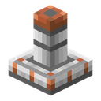

スプリンクラー
alaindustrial:sprinkler
概要
スプリンクラー はこのモッドの有機系統の終点です。畑のくずは 発酵槽 で バイオ燃料 に発酵し、バイオ燃料は 養液 へ蒸留され、その養液がこのブロックを通って同じ畑へ戻ってきます。マストの上の散水ヘッドが回り、3本の銅ノズルが弧を描いて水滴を放ち、周りで育つものがすべて早く実ります。
ミニ例： 蒸留塔からのパイプが、麦畑の真ん中に立つスプリンクラーへ伸びています。ほかには何も要りません — ケーブルも、ホッパーも、見張りも不要です。
エネルギー
スプリンクラーは EU/FE をまったく消費しません。 これは「待機中はゼロ」ではなく、エネルギーという仕組みそのものが存在しないということです。
| 項目 | 値 |
|---|---|
| 全面での役割 | なし（入力でも出力でもない） |
| バッファ | 0 EU/FE |
| ケーブル | 接続できません — 導線はこのブロックへ伸びようとすらしません |
これは意図した決定です。温室 にはすでに加速の軸が2本 — 水と電力 — あり、ケーブルとパイプの両方を要求するブロックは、ひとつの効果に二重の代価を課すことになり、ガーデンドローンステーション との境目もぼやけます：EU/FE で動く農業ブロックとは、まさにあちらのことだからです。スプリンクラーの通貨はひとつだけ、それが養液です。ブロックまで届いていながら1単位も送らないケーブルは、機能している接続に見えてしまいます — そうした嘘は、風力タービンと水車からこのモッドがすでに取り除いたものです。
アップグレードパネルがない のも同じ理由です：このモッドのアップグレードはどれもエネルギーを速度に換えるものですが、ここには換えるものがありません — 死んだスロットが4つあれば、プレイヤーはその意味を推し量る羽目になります。
液体
| 項目 | 値 |
|---|---|
| タンク | 4000 mB（4バケツ、） |
| 受け入れ | 養液 のみ、水源ブロック相当の状態 |
| 排出 | なし — 入れたものは汲み戻せません |
| 面 | すべて — スプリンクラーに「正面」はありません |
タンクを満たす方法は4通り：手に持ったバケツか 真空カプセル でブロックをクリックする、同じ容器を画面の注入スロットへ入れる、ホッパーで同じスロットへ入れる、どの面からでもパイプでつなぐ。満タンで 80回の散水、およそ 80秒 の連続稼働にあたります。連続稼働になることはめったにありません：成立した散水にだけ費用がかかるので、育ちきった畑ではタンクは減りません。
加工
スプリンクラーはレシピ機械ではありません： ごとに散水を1回試みるだけです。
| 項目 | 値 |
|---|---|
| 半径 | 水平方向に 4ブロック（） |
| 範囲の高さ | 床置きなら自分の高さから ±1ブロック、吊り下げなら 真下3ブロック、上方向はなし |
| 試行の間隔 | 20ティック（1秒） — 園芸ドローンステーションと同じ間隔 |
| 1回あたりのコスト | 50 mB（） |
実際に行われた仕事にだけ支払います。 タンクが空のときや、範囲内がすべて育ちきっているときのコストはゼロミリリットルです：失敗した試行では何も引かれません — ガーデンドローンステーションや電気ヒーターと同じ demand-driven の取り決めです。
成長はバニラの骨粉と同じ経路で与えられます（BonemealableBlock — 支柱 やガーデンドローンが使っているのと同じインターフェース）。ランダムティックを強制するのではありません。他人のブロックへのランダムティックは恣意的な副作用です：氷を溶かし、火を広げてしまいます。ですからスプリンクラーが速めるのは、プレイヤーが手に持った骨粉が効いたはずのものだけで、それ以外には何もしません。
対象はばらばらに選ばれます。 範囲内の適した位置の一覧（水平9×9 に、床置きなら3層・吊り下げなら4層、そこから自身の位置を除いたもの）は 100ティックごと に組み直されます — 散水とは別の間隔です：範囲が変わるのはプレイヤーが何かを植えたときであって、毎秒ではありません。走査は一覧のランダムな位置から始まります：順序を固定すると養液がすべて区画の片隅へ流れ、残りの畑は放置されてしまうからです。未読み込みのチャンクは飛ばします — 定期的な走査が同期読み込みを強制することは決してありません。
±1 の高さ があるのは、畑が完全に平らであることはめったにないからです：段差の上のブロックが、下の列にも上の列にも届きます。
吊り下げたものは真下3ブロックを見て、上は見ません。 左右対称の箱は畑の中に立つスプリンクラーには正しく、畑の上に吊るされたものには正しくありません：天井が地面のちょうど1ブロック上にあることはめったになく、±1 のままでは吊り下げたスプリンクラーが自分を留めている天井に水をやることになります。真下3ブロックあれば人の背丈ほどの部屋を覆えます。上を見る意味はありません — そこは天井です。
クリスタル温室
密閉された 温室 の中では、スプリンクラーの働き方が変わります。クリスタル苗床は骨粉が効かず、スプリンクラー自身のオーラも届きません — 代わりに 温室の制御装置が部屋の中のスプリンクラーを自分で見つけ、水と電力に並ぶ 3本目の加速の軸 として数えます。
| 項目 | 値 |
|---|---|
| 効果 | 成長の除数 ÷2（）、水と電力の上に重なります |
| コスト | 実際に得られたクリスタル1個につき 50 mB（） |
| 引かれる時点 | 試行ごとではなく、クリスタルが出た事実に対して |
養液が買うのはクリスタルであって、サイコロの目ではありません — EU/FE とまったく同じです。タンクが空の加速装置は単に数に入りません：部屋は残る2本の軸で育ちます。
インベントリ
| スロット | 受け入れ | 個数 |
|---|---|---|
| 注入（0） | 養液の入った満タンのバケツ/カプセル | 1 |
| 容器の返却（1） | 空になった容器 — 機械だけが入れます | スタックまで |
アップグレードパネルはありません（「エネルギー」を参照）。ホッパーはスロット0へ入れ、スロット1から取り出すことだけができます。
インターフェース
このモッドで最も小さな画面です：養液のメーター1本と容器スロット1組だけ。エネルギーバーはありません — ブロックが電力を消費しない以上、いつまでも空のバーは故障に見えてしまうからです。タンクの残量は3通りで分かります：メニューのメーター、ワールドでのヘッドの回転、そして外からのパイプやツールチップです。
素手でクリックすると画面が開き、バケツやカプセルでクリックするとその場でタンクを満たします。
ブロック属性
完全な立方体ではありません：10×3×10 ピクセルの低い台座と、その上の 4×9×4 のマスト。3本のノズルを備えたヘッドはブロックエンティティレンダラーの造形で、当たり判定も選択枠もありません。
| 項目 | 値 |
|---|---|
| 形状（床置き） | 台座 3..13 / 0..3 ＋ マスト 6..10 / 3..12（オクルーダーではない） |
| 形状（天井吊り） | 同じ輪郭の鏡写し：天井側に板、その下にマスト |
| 硬度 | 3.0 |
| 爆発耐性 | 6.0 |
| 音の素材 | 金属 |
| ツール | ツルハシ |
| 破壊時に中身を保持 | いいえ — タンクはアイテムではなくブロックの中に生きています |
天井にも設置できます。 hanging の値はランタンと同じ決め方です：上のブロックの底面をクリックすればスプリンクラーは吊り下がり、それ以外のクリックなら立ちます。屋根のある区画や温室には天井があってマストの場所がなく、畑の上に吊るしたスプリンクラーこそがそこで必要なものです。ほかは何も変わりません：ヘッドは回り、しぶきは下へ落ち、範囲は相変わらずブロックを中心とします。
ヘッドはタンクに撒くものがある限り回り続けます。 散水が実際に起きたティックだけではありません：5秒に1回だけ動く機構は、壊れているように見えてしまうからです。
しぶき は重力と抵抗を持つ専用の水滴パーティクルです。水滴はプレイヤーに見えている ノズルから飛び出し、半径いっぱいにばら撒かれるのではなく弧を描いて落ちます：どこへ落ちるかは、どれだけの勢いで放たれたかの結果です。放つ勢いは範囲の半径に合わせてあるため、目に見える散布範囲と実際に世話をする円は一致します。
レシピ
クラフト — ：
上段は銅プレート2枚を両端に、その間に金の歯車。グリッド中央には鉄プレートが1枚だけ。下段は鉄プレート2枚を両端に、中央に機械ケーシング。
上の歯車が回転するヘッド、真ん中の1枚のプレートがマストです。このブロックに加工レシピはありません。
進行
ティア：なし（エネルギーを使いません）。それでもクラフトは立派に LV 級です：機械ケーシングと金の歯車は序盤の部品ではありません。 系統の最後の環として設置します：発酵槽 → バイオ燃料 → 蒸留塔 → 養液 → スプリンクラー。 このモッドで唯一の養液の消費先です。
関連項目
養液 — このブロック唯一の燃料。 発酵槽 — 系統の始点。 蒸留塔 — バイオ燃料から養液を作ります。 クリスタル温室 — 3本目の加速の軸。 ガーデンドローンステーション — EU/FE で動く隣の農業ブロック：互いに競合せず補い合います。 真空カプセル — 養液を持ち運ぶための容器。
クラフト
定型クラフト
▶
スプリンクラー